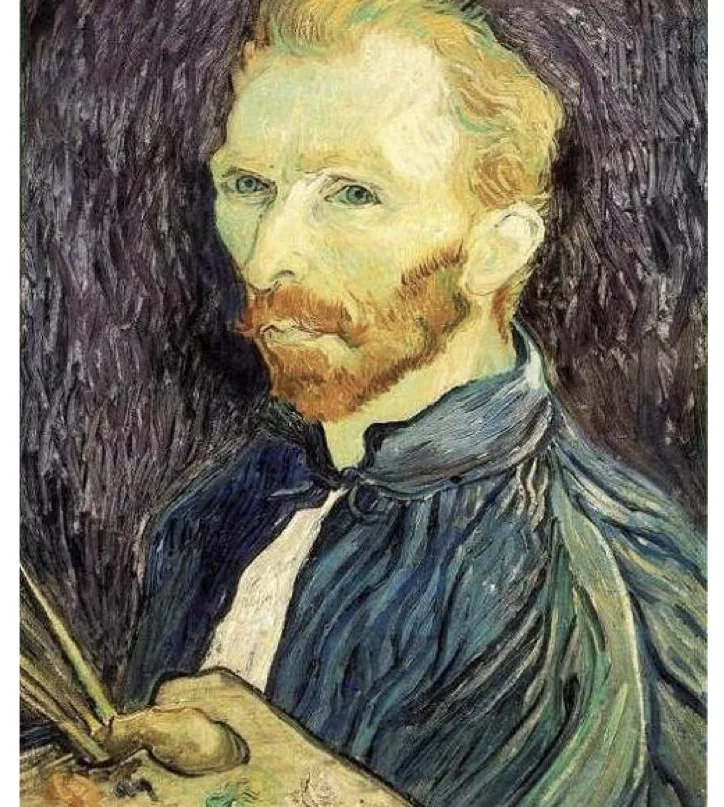
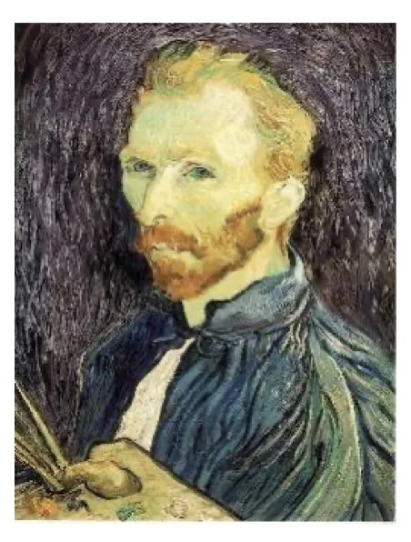
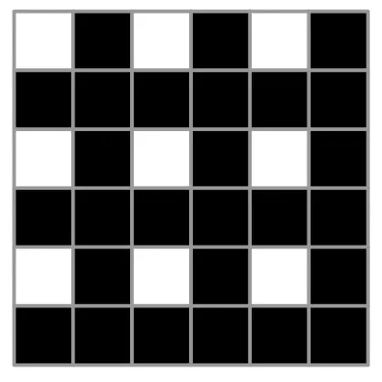
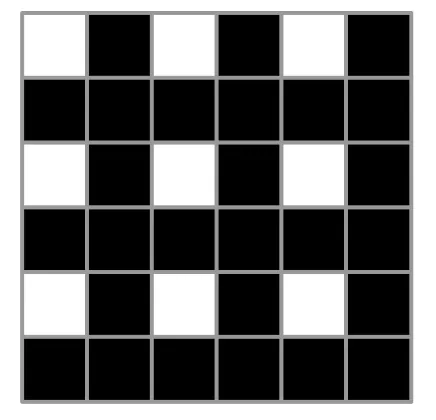
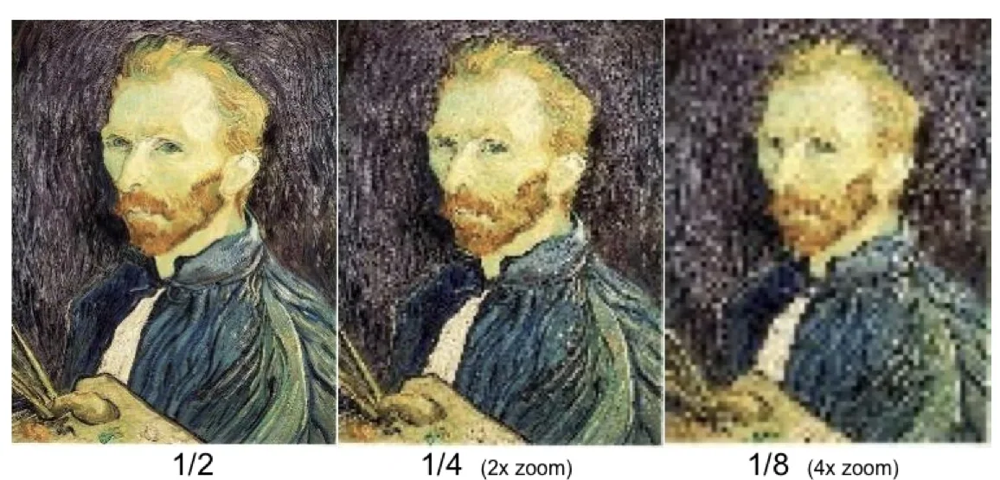
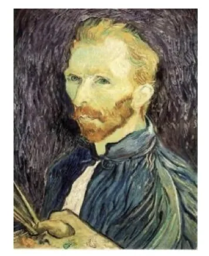

计算机视觉 · 第 2 章 图像处理基础
2.12 图像缩小——下采样
前面几节的滤波都是为了「让图像变好」——去噪、平滑或者锐化，尺寸始终不变。这一节换一个目的：改变图像的尺寸，而且是往小里改。缩小听起来只是「少留一些像素」，可最省事的做法恰恰是错的：直接丢掉一些行和列会把信息真正扔出去，缩小之后再放大回来就能看得很清楚。正确做法是先把高频滤掉再下采样，而且逐级缩小的时候，滤波核还要一级比一级大。
1. 最朴素的做法：交替去除行和列
图像在计算机里是排成行列的像素网格，所以要缩小它，最直接的想法就是让这张网格变稀：隔一行删一行、隔一列删一列，也就是交替去除一些行和列。要缩到一半，就把行和列各去掉一半；同样的操作再做一次得到 1/4，再做一次得到 1/8。这种从原图上按整数倍抽走像素、让网格变稀的做法，就是下采样（downsampling），课件里也写作「下（子）采样」。

它的好处是简单、快，几乎不需要计算：新图像里每个像素直接取自原图。代价也要看清楚——被删掉的那些行列上的像素值，此后再也没有参与过任何运算，它们携带的信息在这一步就被永久扔掉了。

2. 直接丢行丢列，丢掉的是什么
把缩小的动作拆开看，缩到 1/2 只有两步：先去除一半的行，再去除一半的列。这两步之后图像的面积只剩原来的四分之一，而留下的每一个像素都只是原图对应位置上那一个像素的值，被删掉的邻居没有以任何形式被平均进来。

这样得到的结果是什么样？课件的批注很直白：信息严重丢失。原因在于图像里细密的内容——纹理、边缘、小目标——本来是靠相邻像素之间的配合才表现出来的：一条边缘要几个像素一起才看得出走向，一片纹理要一片像素一起才看得出规律。直接抽走一半的行列，这种配合被打散，剩下的像素不足以完整表达原来的图像。

只看缩小后的图，人眼往往还不容易判断损失有多大；把缩小后的图像再放大回原来的尺寸并排一比，问题就暴露了——这就是课件说的对图像缩小后再放大，图像失真。放大时并没有新的信息可用（放大靠的是插值，下一节会专门讲），只能根据已有的像素去「猜」，猜出来的结果自然与原图不同。缩得越小、放得越大，这种失真越明显。

3. 正确做法：先高斯滤波，再下采样
要保住信息，就不能让「丢弃」这一步单独完成。课件的做法是滤波后下采样：先对图像进行高斯滤波，然后进行下（子）采样。
为什么中间要加这一步滤波？下采样相当于在新的、更稀疏的网格上重新取样；取样之前，图像里不应该还存在新网格无法表达的过细内容。直接抽像素等于把这些过细内容一并带进低分辨率网格，在那里它们无法被正确表示，于是相互干扰，变成与原图无关的花纹和锯齿——这类现象称为混叠（aliasing）。先做一次高斯滤波，就是把超出新网格表达能力的高频内容先压下去，此时再采样，取到的样本才是对原图相应区域的一个合理概括。

这样一来，高斯滤波在本章里的角色就多了一层：前面把它当作去除噪声、平滑图像的滤波器，放到尺寸变换的流程里，它承担的职责是抗混叠，保证缩小后的每一个像素都是原图一片区域的代表，而不是某一个像素的幸存者。
4. 为什么每缩小一半，滤波核要加倍
滤波和下采样要交替进行，随之而来的是一个容易被忽略的细节：每减少 1/2 尺寸，滤波核大小应增加一倍。理由是，图像每缩小一半，缩小图上的一个像素所对应的原图范围就扩大一倍；滤波核如果始终维持原来的大小，它在缩小图上覆盖到的「原图信息」就与新图的比例对不上了。课件把原因写得很简洁：滤波核尺寸增加一倍，每个缩小后的图像对应的像素就考虑了多一倍的像素信息。
换个说法会更好记：滤波核的大小不是跟着缩小后的图像走，而是跟着它在原图上的覆盖范围走。逐级缩小因此是一个「滤波 → 下采样 → 换一个更大的核再滤波 → 再下采样」的循环：Gaussian 1/2、G 1/4、G 1/8 这样一级级下去，核一级级变大，每一级滤掉的是这一级网格已经无法表达的那些细节。也正因为核在变大，后续几级的计算量并不会因为图像变小而按面积的比例一起降下来。
5. 两种做法的对照
课件把两条路线并排放在一起（第 73 张与第 74 张）：一条是先做高斯滤波再逐级下采样，标注为 Gaussian 1/2、G 1/4、G 1/8；另一条完全不做滤波，标注为 1/2、1/4（放大 2 倍显示）、1/8（放大 4 倍显示）。两组图的缩小倍率相同、放大回来比较的方式也相同，唯一的差别就在中间那一步滤波。
对照的结论前面已经点明：不做滤波的那一组，缩到 1/2 时就已经信息严重丢失，越往后越明显；而先做高斯滤波的一组，在同样的倍率下仍能保住图像的主要结构。这就是为什么在图像金字塔、缩略图这类需要反复缩小的场合，先滤波再下采样是默认的做法，而不是一个可选的优化。
本节小结
- 缩小图像最朴素的办法是交替去除一些行和列：表面上看只是让像素网格变稀，实际上被删掉的行列上的信息被永久丢弃。
- 这样做的后果是信息严重丢失；只看缩小图不易察觉，把缩小后的图再放大回来对照，就能看到图像失真，而且缩得越小、放得越大越明显。
- 下采样就是按整数倍抽走像素、形成更稀疏的网格；直接抽取会把新网格无法表达的高频内容带进来造成混叠。
- 正确流程是先对图像做高斯滤波再进行下（子）采样：滤波在这里的作用是抗混叠，保证缩小后每个像素都能代表原图的一片区域。
- 逐级缩小要同步放大滤波核：每减少 1/2 尺寸，核大小增加一倍，这样每个缩小后的像素考虑的原图像素信息才跟着翻倍。